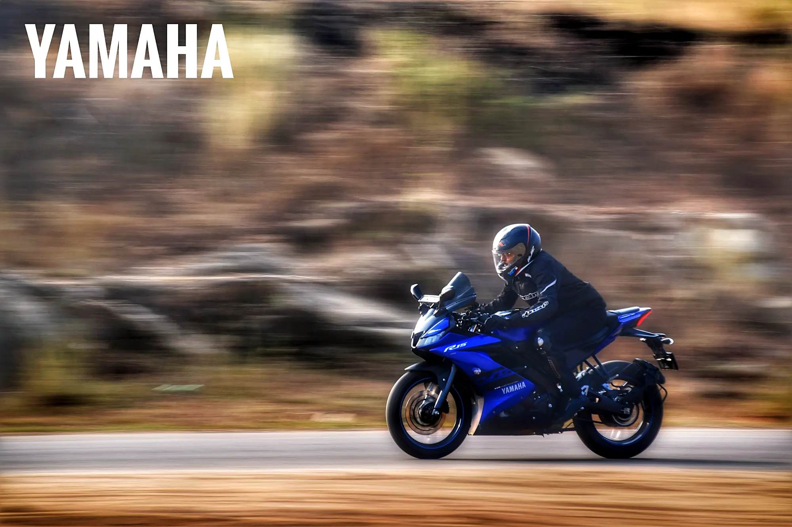
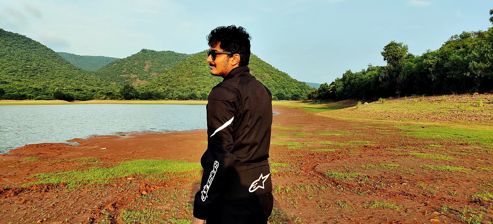
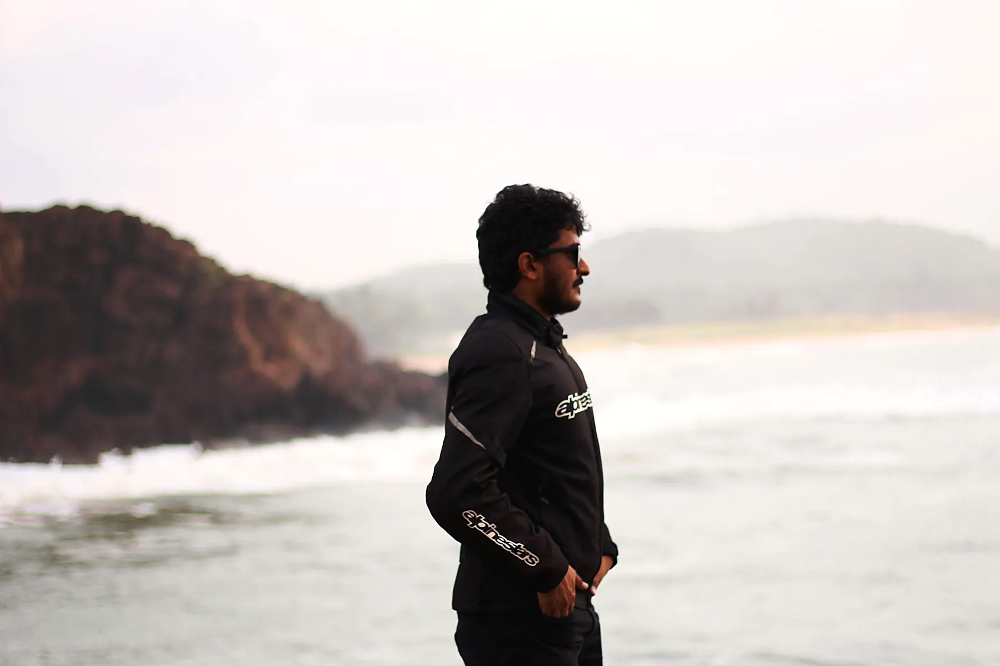

My first bikeYamaha R15 V3

- Bike
- Yamaha R15 V3
- Brought home
- 17 May 2019
- Where
- Bengaluru
- Bike number
- 01, my first
I brought home my Yamaha R15 V3 in Bengaluru on 17 May 2019. It was my first bike, and from the first ride it became one of my favourite things to do.
Over the years it took me out of the city to lakes, hills and the coast. Riding gave me a kind of quiet focus I don't get anywhere else.

Getting back on the road
For the last three years I haven't ridden much. Putting these photos together reminded me how much I enjoy it, so this story is also a promise to myself to ride more.
